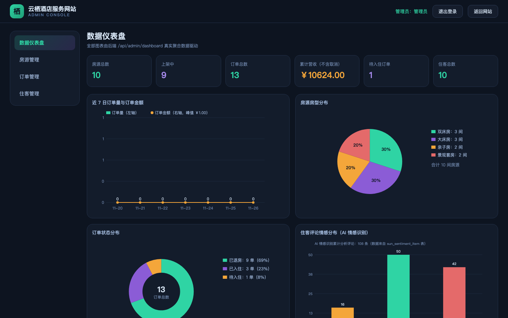

主要功能
- 管理员登录 / 登出，Token 保存在 localStorage，刷新保持登录态
- 仪表盘：近 7 日订单量与金额、房型分布、订单状态、情感分布，全部由后端真实聚合数据驱动
- 房源 / 订单 / 住客三张管理表格：分页、搜索、新增、编辑、删除、详情
- 接口统一返回 JSON，错误码与消息在页面顶部提示
管理员登录后进入数据仪表盘与实体管理：房源、订单、住客三类数据的增删改查、搜索分页与详情；所有管理接口由 Bearer Token 鉴权，未登录访问返回 401。

POST /api/admin/loginPOST /api/admin/logout
GET /api/admin/profileGET /api/admin/dashboard
/api/admin/rooms（GET/POST/PUT/DELETE）
/api/admin/orders（GET/POST/PUT/DELETE）
/api/admin/guests（GET/POST/PUT/DELETE）
cd backend && node app.js → http://localhost:8016/sun_admin.html （演示账号 admin / admin123）
注意：登录与全部管理接口必须本地 Node 后端 + MySQL 支持；静态托管下无法登录，故新版首页只链接本说明页。